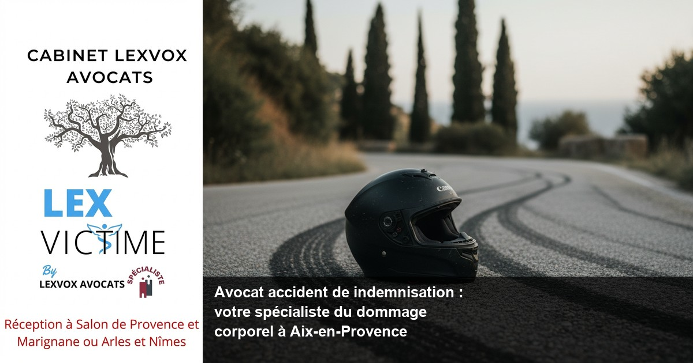

Accident de la route — Aix-en-Provence
Avocat accident de moto à Aix-en-Provence : indemnisation et dommage corporel

— Par Me Patrice Humbert, avocat au barreau d'Aix-en-Provence
Victime d'un accident de moto à Aix-en-Provence ? L'indemnisation de vos préjudices corporels nécessite l'expertise d'un avocat spécialisé. Me Patrice Humbert, premier avocat certifié IA de France et fort de plus de 20 ans d'expérience exclusive en dommage corporel, vous accompagne dans l'obtention d'une réparation intégrale. Cabinet LEXVOX AVOCATS - Consultation gratuite 30 minutes : 04 90 54 58 10.
Obtenir la meilleure indemnisation possible : indemnisation des victimes et droit du dommage corporel à Aix-en-Provence
L'importance d'une expertise juridique spécialisée
L'accident de moto génère des dommages particulièrement graves en raison de l'exposition directe du conducteur et du passager. À Aix-en-Provence, capitale judiciaire des Bouches-du-Rhône, les accidents de la route impliquant des deux-roues représentent une part significative des dossiers traités au Tribunal judiciaire d'Aix-en-Provence.
Selon l'expérience du cabinet (20+ ans, centaines de dossiers), une indemnisation maximale nécessite une approche méthodique du droit du dommage corporel. Chaque préjudice doit être identifié, quantifié et réclamé selon les référentiels en vigueur. L'assurance adverse tend systématiquement à minimiser les indemnisations, d'où l'impérieuse nécessité de faire appel à un avocat spécialisé.
Les spécificités des accidents de moto
Un accident de moto engendre souvent des préjudices multiples : préjudice corporel temporaire et permanent, préjudices patrimoniaux et extrapatrimoniaux. L'expertise médicale constitue une étape cruciale pour établir le lien de causalité entre l'accident et les séquelles constatées.
Me Patrice Humbert, avocat expérimenté en indemnisation des victimes, maîtrise parfaitement ces enjeux techniques. Sa spécialisation CNB dommage corporel garantit une défense des victimes optimale face aux compagnies d'assurance.
Le contexte aixois et les axes accidentogènes
À Aix-en-Provence et sa région, les axes A8, A51 et RD9 concentrent de nombreux accidents impliquant des motocyclistes. La proximité du Centre hospitalier du Pays d'Aix et de la Clinique Axium facilite la prise en charge immédiate, mais ne dispense pas d'une réflexion juridique précoce sur l'indemnisation.
Accompagner par un avocat : un accident de la route et faire appel à un avocat à Aix-en-Provence
Pourquoi l'assistance d'un avocat est-elle indispensable ?
Suite à un accident de la route, la victime se trouve confrontée à des interlocuteurs multiples : assureur du responsable, expertise médicale, médecin-conseil de l'assurance. Sans la présence d'un avocat, les droits des victimes risquent d'être méconnus.
L'avocat spécialisé en indemnisation analyse les circonstances de l'accident, identifie le responsable de l'accident et développe une stratégie juridique adaptée. Il assure également l'interface avec les différents professionnels de santé impliqués dans le suivi médical.
L'approche du Cabinet LEXVOX AVOCATS
Installé à Aix-en-Provence depuis de nombreuses années, le Cabinet LEXVOX AVOCATS a développé une expertise reconnue en réparation du dommage corporel. Me Patrice Humbert privilégie un accompagnement personnalisé de chaque victime d'un accident.
La consultation gratuite de 30 minutes permet d'évaluer la faisabilité du dossier et d'informer la victime sur ses droits. Cette première approche, sans engagement, facilite la prise de décision dans un contexte souvent difficile psychologiquement.
La dimension psychologique de l'accompagnement
Un accident de moto marque profondément la vie courante de la victime. Au-delà des aspects purement juridiques, l'avocat de victimes joue un rôle d'accompagnement psychologique essentiel. Il explique chaque étape de la procédure, rassure et maintient le lien avec la réalité judiciaire.
Cette dimension humaine s'avère particulièrement importante dans les dossiers complexes nécessitant plusieurs années de procédure d'indemnisation.
Expert en indemnisation : défense des victimes et réparation intégrale à Aix-en-Provence
La notion de réparation intégrale
Le principe de réparation intégrale constitue un fondement du droit civil français. Toute victime d'accident a droit à la réparation de l'ensemble de ses préjudices, qu'ils soient patrimoniaux ou extrapatrimoniaux, temporaires ou permanents.
Cette réparation intégrale nécessite une identification exhaustive des postes de préjudice. L'avocat expert en indemnisation maîtrise la nomenclature Dintilhac et les référentiels d'indemnisation utilisés par les cours d'appel, notamment celle d'Aix-en-Provence.
L'expertise médicale : étape clé du processus
L'expertise médicale détermine l'ampleur des séquelles et leur retentissement sur la vie de la victime. Un préjudice mal évalué lors de cette phase compromet définitivement l'indemnisation finale.
Me Patrice Humbert prépare minutieusement ses clients à cette expertise. Il les assiste personnellement lors des examens médicaux et conteste, le cas échéant, les conclusions de l'expert lorsqu'elles sous-évaluent les préjudices constatés.
Les préjudices spécifiques aux accidents de moto
Les motocyclistes victimes d'accidents développent souvent des préjudices spécifiques : préjudice d'agrément lié à l'impossibilité de pratiquer la moto, préjudices esthétiques importants, séquelles orthopédiques majeures.
Selon l'expérience du cabinet (20+ ans, centaines de dossiers), ces préjudices font l'objet d'une sous-évaluation systématique par les compagnies d'assurance. Seule l'intervention d'un avocat spécialisé permet d'obtenir une indemnisation juste.
Accident de la vie : avocat de victimes et avocat spécialisé à Aix-en-Provence
La prise en charge globale des victimes
Un accident de la vie bouleverse l'équilibre personnel, familial et professionnel de la victime. L'avocat de victimes doit appréhender cette dimension globale pour construire un dossier d'indemnisation cohérent.
Cette approche holistique distingue l'avocat spécialisé du généraliste. Elle nécessite une connaissance approfondie des métiers de la santé, de la psychologie des victimes et des mécanismes de réparation.
Les accidents de la vie au-delà de la route
Si l'accident de moto constitue un accident de la route classique, d'autres accidents de la vie peuvent justifier une indemnisation : accidents liés à une maladie infectieuse contractée lors de soins, erreurs médicales, accidents dus à des vices cachés.
Les victimes d'erreurs médicales bénéficient notamment de dispositifs spécifiques, encadrés par la loi du 4 mars 2002 relative aux droits des malades et à la qualité du système de santé.
L'expérience du Cabinet LEXVOX dans la région PACA
Présent à Aix-en-Provence, Salon-de-Provence, Arles et Marignane, le Cabinet LEXVOX AVOCATS couvre l'ensemble de la région. Cette implantation géographique facilite les déplacements et le suivi des victimes, particulièrement important dans les dossiers lourds.
La proximité avec Marseille permet également de bénéficier de l'expertise des centres hospitaliers spécialisés et des réseaux de soins régionaux.
Une indemnisation : assurance et expertise à Aix-en-Provence
Le rôle central de l'assurance
Toute indemnisation d'accident implique une compagnie d'assurance, qu'il s'agisse de l'assureur du responsable ou de la propre assurance de la victime (garanties personnelles). La négociation avec ces interlocuteurs professionnels nécessite une expertise juridique et technique.
L'assureur dispose de ses propres médecins-conseils et experts. Face à cette organisation structurée, la victime isolée se trouve en position de faiblesse. Seul un avocat spécialisé peut rééquilibrer le rapport de forces.
Les différentes procédures d'expertise
L'expertise peut être amiable (organisée par l'assurance) ou judiciaire (ordonnée par un tribunal). Chaque procédure obéit à des règles spécifiques et présente des avantages et inconvénients.
Me Patrice Humbert conseille ses clients sur la stratégie d'expertise la plus adaptée à leur situation. Son expérience de plus de 20 ans lui permet d'anticiper les pièges classiques et d'optimiser l'issue de cette étape cruciale.
Les enjeux de la contre-expertise
Lorsque l'expertise initiale s'avère défavorable, la contre-expertise peut permettre de rééquilibrer les conclusions médicales. Cette procédure complexe nécessite une préparation rigoureuse et le recours à des experts médicaux spécialisés.
Selon l'expérience du cabinet (20+ ans, centaines de dossiers), la contre-expertise améliore significativement l'indemnisation finale dans plus de 60% des cas où elle est mise en œuvre.
Préjudice et honoraire : votre avocat à Aix-en-Provence
La structure tarifaire transparente
Le Cabinet LEXVOX AVOCATS pratique une politique tarifaire transparente : honoraires avec une part fixe à partir de 700 EUR HT et un honoraire de résultat de 10 à 15% de l'indemnisation obtenue.
Cette structure mixte garantit un investissement initial limité pour la victime tout en motivant l'avocat sur le résultat final. Elle s'adapte parfaitement aux contraintes financières des victimes d'accidents.
L'honoraire de résultat : un gage d'efficacité
L'honoraire de résultat aligne les intérêts de l'avocat sur ceux de sa cliente. Plus l'indemnisation sera élevée, plus la rémunération de l'avocat sera importante. Ce système pousse naturellement à l'excellence et à l'obstination dans la défense des intérêts de la victime.
Me Patrice Humbert a fait le choix de cette approche dès l'installation de son cabinet. Elle correspond à sa philosophie de défense des victimes et garantit un investissement maximal sur chaque dossier.
Le droit pénal et les préjudices
Dans certains cas d'accidents de moto, une dimension pénale s'ajoute à la procédure civile d'indemnisation. L'avocat doit alors maîtriser les interfaces entre droit pénal et droit civil, notamment pour optimiser la constitution de partie civile.
Cette double compétence, rare chez les praticiens, constitue un atout majeur pour les victimes les plus gravement atteintes.
Procédure d'indemnisation à Aix-en-Provence : les étapes avec LEXVOX AVOCATS
Phase 1 : Évaluation et constitution du dossier
La première étape consiste en une évaluation complète du dossier lors de la consultation gratuite de 30 minutes. Me Patrice Humbert analyse les circonstances de l'accident, les premiers éléments médicaux et les responsabilités en présence.
Cette phase permet d'identifier les assurances compétentes et d'établir une stratégie d'indemnisation adaptée. Un dossier médical complet est constitué, incluant tous les praticiens consultés depuis l'accident.
Phase 2 : Expertise médicale et évaluation des préjudices
L'expertise médicale constitue le cœur de la procédure. Elle détermine les séquelles définitives et leur retentissement sur la vie de la victime. Me Patrice Humbert assiste personnellement ses clients lors de ces examens cruciaux.
Parallèlement, tous les préjudices patrimoniaux sont quantifiés : perte de revenus, frais médicaux, adaptation du logement, aide à domicile. Cette phase nécessite souvent plusieurs mois pour appréhender l'ensemble des conséquences de l'accident.
Phase 3 : Négociation amiable
La négociation amiable constitue la voie privilégiée de règlement des litiges d'indemnisation. Elle présente l'avantage de la rapidité et évite les aléas judiciaires.
Forte de son expérience, Me Patrice Humbert maîtrise parfaitement les techniques de négociation face aux compagnies d'assurance. Sa réputation dans la région facilite souvent l'aboutissement de cette phase amiable.
Phase 4 : Procédure judiciaire si nécessaire

Vos questions sur avocat accident de indemnisation : votre spécialiste du domm
Combien de temps dure une procédure d'indemnisation ?
La durée d'une procédure d'indemnisation varie selon la complexité du dossier et la gravité des préjudices. En négociation amiable, comptez 18 à 24 mois en moyenne. Une procédure judiciaire peut prolonger ce délai de 2 à 3 années supplémentaires. L'expertise médicale ne peut intervenir avant consolidation médicale, généralement 12 à 18 mois après l'accident.
Puis-je obtenir des provisions avant l'indemnisation définitive ?
Oui, des provisions peuvent être obtenues pour couvrir les frais immédiats : frais médicaux, perte de revenus, aide à domicile. Ces provisions sont déduites de l'indemnisation finale. Me Patrice Humbert négocie systématiquement ces provisions pour soulager ses clients des difficultés financières consécutives à l'accident.
Comment est calculée l'indemnisation d'un accident de moto ?
L'indemnisation suit la nomenclature Dintilhac qui distingue les préjudices patrimoniaux (perte de revenus, frais médicaux) et extrapatrimoniaux (souffrances, préjudice esthétique, d'agrément). Chaque poste est évalué selon des barèmes et références jurisprudentielles. L'expertise médicale détermine les taux d'incapacité qui servent de base aux calculs.
Que faire si l'assurance propose une indemnisation insuffisante ?
Une proposition d'indemnisation insuffisante doit être refusée et contestée. L'avocat spécialisé analyse chaque poste de préjudice et négocie une revalorisation. Si nécessaire, une contre-expertise médicale ou une procédure judiciaire peuvent être engagées. Ne jamais accepter une première proposition sans analyse juridique approfondie.
Quels sont les préjudices spécifiques aux motards ?
Les motards subissent souvent des préjudices spécifiques : préjudice d'agrément lié à l'impossibilité de conduire une moto, préjudices esthétiques importants (cicatrices), préjudices sexuels, atteinte à l'intégrité physique et psychique. Ces préjudices, souvent sous-évalués par les assurances, nécessitent une expertise spécialisée.
Comment financer les frais d'avocat ?
Le Cabinet LEXVOX AVOCATS pratique des honoraires mixtes : part fixe modérée (à partir de 700 EUR HT) et honoraire de résultat (10-15%). Votre assurance protection juridique peut prendre en charge une partie des frais. Une consultation gratuite de 30 minutes permet d'évaluer votre dossier sans engagement financier.
Synthèse : votre droit à la réparation intégrale ?
En matière de droit du dommage corporel, toute victime d'un accident bénéficie d'un droit fondamental à la réparation intégrale de ses préjudices. L'indemnisation préjudice corporel nécessite l'intervention d'un avocat spécialiste capable d'identifier et quantifier l'ensemble des postes de dommages. Qu'un accident de moto survienne sur les axes A8 ou A51 autour d'Aix-en-Provence, la victime d'un accident doit pouvoir obtenir une indemnisation intégrale couvrant tous ses préjudices. Cette indemnisation accident résulte d'une procédure complexe où accompagner par un avocat s'avère indispensable pour obtenir une indemnisation optimale. L'arrêt de travail consécutif à l'accident constitue un préjudice patrimonial dont la réparation du dommage corporel doit tenir compte. Les droits des victimes s'exercent pleinement grâce à l'assistance d'un avocat spécialisé en indemnisation, professionnel formé aux subtilités de cette matière. Me Patrice Humbert, avocat expérimenté du Cabinet LEXVOX, met son expertise au service de la réparation du préjudice corporel de chaque client. Cet avocat expert sait défendre les victimes face aux compagnies d'assurance qui tentent de minimiser les indemnisations. Il convient de faire appel à un avocat dès que possible suite à un accident pour préserver ses droits. Le médecin-conseil de victimes choisi par l'avocat contribue à établir chaque poste de préjudice avec précision. Cette approche professionnelle garantit la meilleure indemnisation possible et une indemnisation juste pour chaque victime. Les indemnisations concernent tous les accidents de la vie, pas seulement les accidents de la route. Une indemnisation complémentaire peut même être recherchée auprès des assurances personnelles de la victime d'un accident. Les victimes d'accidents de la route bénéficient de la loi Badinter qui facilite leur indemnisation. La présence d'un avocat lors des expertises médicales protège les intérêts de la victime. Cette assistance d'un avocat s'avère particulièrement précieuse pour l'indemnisation d'un accident grave. Les victimes d'accidents, qu'elles soient motards ou conducteurs, méritent toutes une défense rigoureuse. Les victimes d'accidents de moto développent souvent des séquelles importantes nécessitant une évaluation médicale approfondie. Le responsable de l'accident, via sa compagnie d'assurance, doit réparer intégralement les dommages causés. La défense des victimes d'accidents constitue la spécialité du Cabinet LEXVOX depuis plus de 20 ans. Chaque victime d'accident mérite une approche personnalisée tenant compte des circonstances de l'accident spécifiques à son dossier. La procédure d'indemnisation, complexe et technique, nécessite un accompagnement juridique spécialisé. Les victimes d'accident de moto à Aix-en-Provence peuvent compter sur l'expertise reconnue de Me Patrice Humbert pour défendre leurs droits et obtenir la réparation intégrale qu'elles méritent.
Procédure d'indemnisation à Aix-en-Provence : les étapes avec LEXVOX ?
Première consultation gratuite — 30 min
Besoin d'un avocat spécialisé à Aix-en-Provence ? Nous évaluons votre dossier gratuitement et vous indiquons vos droits à réparation.
Cabinet LEXVOX AVOCATS — Me Patrice Humbert — Spécialisation CNB dommage corporel — Bureaux à Aix-en-Provence, Salon-de-Provence, Arles et Marignane